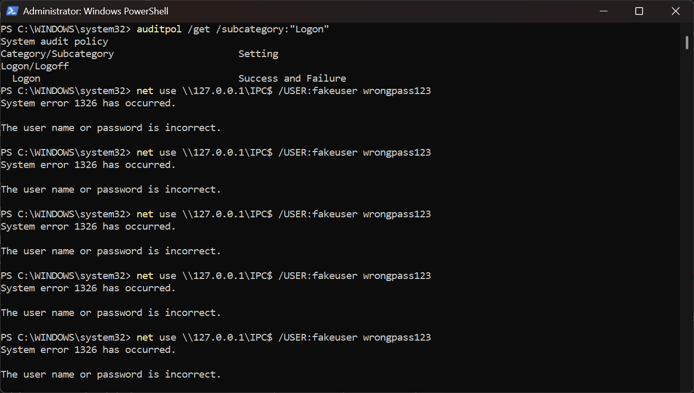
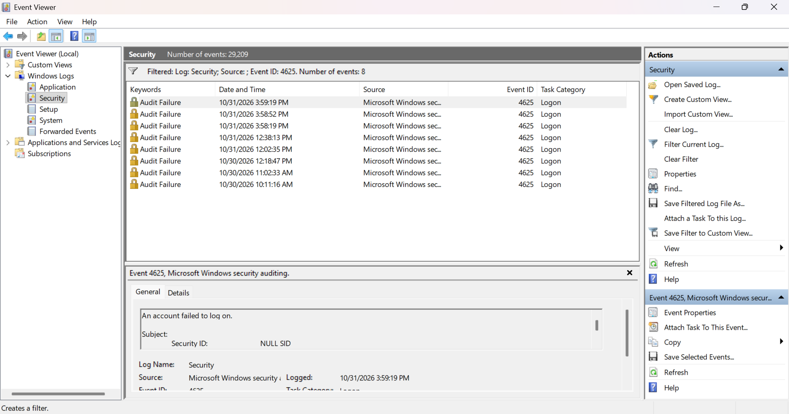
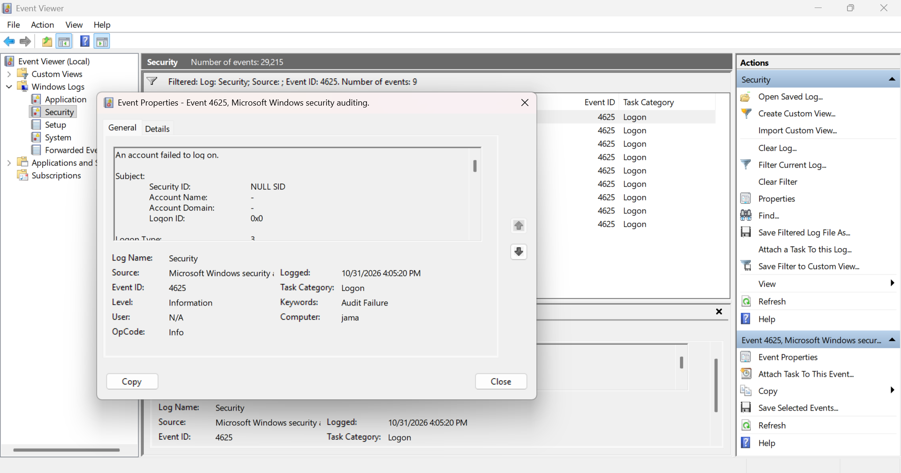
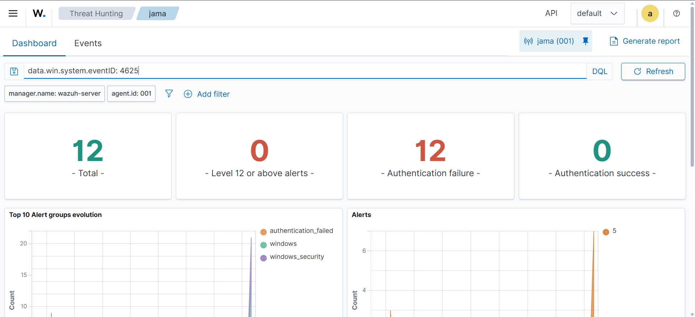
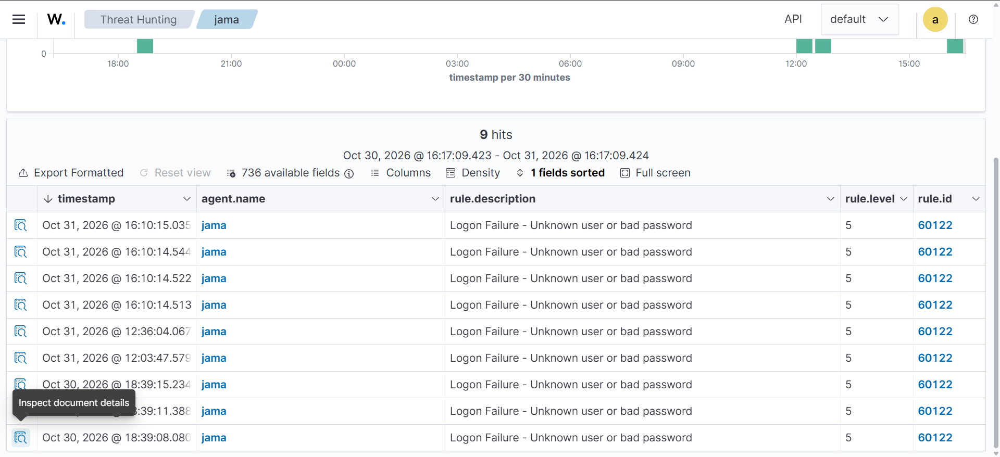
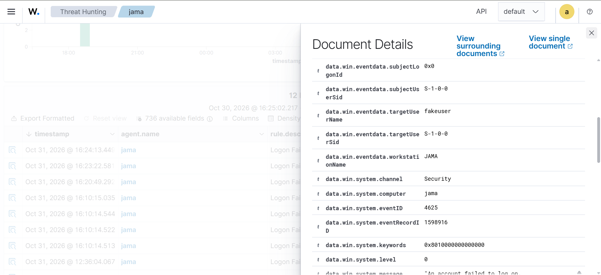
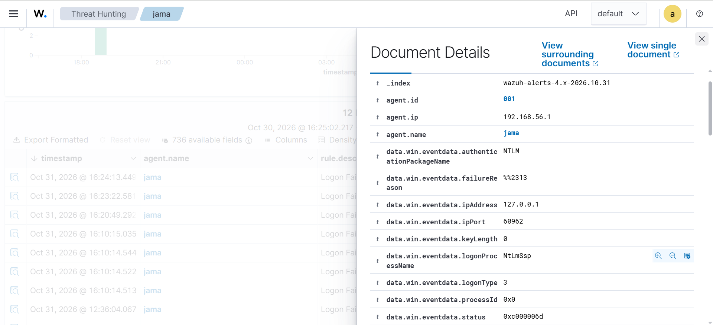
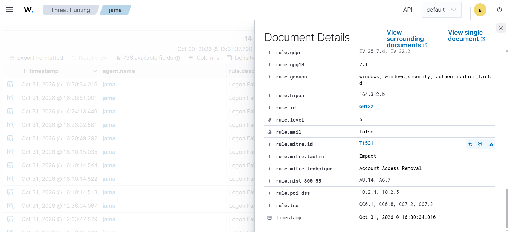

Lab 04 - Detecting Failed Windows Logons (Event ID 4625) with Wazuh
In Lab 03 I detected failed SSH logins on Linux. Here I did the same for Windows: I generated failed logons against a user name that does not exist, confirmed that Windows recorded Event ID 4625, and found the matching alerts in Wazuh. At the end I compare the Windows and Linux detections.
| Step | What I did | Evidence |
|---|---|---|
| 1 | Checked that Windows audits logon failures, then generated failed logons | Screenshot 01 |
| 2 | Confirmed Event ID 4625 in Windows Event Viewer | Screenshots 02, 03 |
| 3 | Found the alerts in Wazuh Threat Hunting | Screenshots 04, 05 |
| 4 | Read the alert fields and the MITRE mapping | Screenshots 06, 07, 08 |
| 5 | Compared the Windows and Linux detections | Table in section 6 |
Lab environment
Everything ran on my own computer and in my isolated VirtualBox
host-only network (192.168.56.0/24).
| Machine | Role | Address |
|---|---|---|
Windows 11 Pro (jama) |
Monitored endpoint, Wazuh agent 001 | 192.168.56.1 |
| Wazuh server | Manager, Indexer and Dashboard (4.14.9) | 192.168.56.105 |
1. Check auditing and generate failed logons
Goal: make sure Windows records failed logons, then create some safely.
Windows only logs what its audit policy tells it to. I checked the Logon subcategory in an administrator PowerShell window:
auditpol /get /subcategory:"Logon"The setting was Success and Failure, so failed logons are recorded.
To create failures without touching any real account, I tried to connect to my own PC with a user name that does not exist and a throwaway password:
net use \\127.0.0.1\IPC$ /user:fakeuser wrongpass123Each attempt returned System error 1326: The user name or password is incorrect.

What I learned: logging has to be switched on in the audit policy. A fake user name is a safe way to test detection, because a real account cannot be locked out.
2. Confirm Event ID 4625 in Event Viewer
I opened Event Viewer > Windows Logs > Security and filtered the log for Event ID 4625. Every failed attempt appears as an Audit Failure event in the Logon task category.


The event text begins "An account failed to log on". The Logon Type is 3, which means a network logon, and the Subject section shows a NULL SID with account name "-". That is normal for failed network logons, because no account was authenticated. The account that was tried is reported further down, in the "Account For Which Logon Failed" section.
What I learned: 4625 is the Windows event for a failed logon, and the Logon Type tells you how the attempt was made (2 is interactive at the keyboard, 3 is over the network, 10 is remote desktop).
3. Find the alerts in Wazuh
The Wazuh agent on this PC reads the Security log and forwards events
to the manager. In Threat Hunting I selected agent
jama and searched:
data.win.system.eventID: 4625
The dashboard counted the matching alerts all as authentication failures, with 0 authentication successes. In the Events tab, every alert uses rule 60122, "Logon Failure - Unknown user or bad password", at level 5.

4. Read the alert
I opened one of the newest alerts. The
data.win.eventdata fields tell the story:


| Field | Value | Meaning |
|---|---|---|
data.win.system.eventID |
4625 | Windows failed-logon event |
data.win.system.channel |
Security | Source log |
data.win.eventdata.targetUserName |
fakeuser | The account that was tried |
data.win.eventdata.logonType |
3 | Network logon |
data.win.eventdata.authenticationPackageName |
NTLM | Authentication method |
data.win.eventdata.logonProcessName |
NtLmSsp | Logon process |
data.win.eventdata.ipAddress |
127.0.0.1 | Source address (my own PC) |
data.win.eventdata.workstationName |
JAMA | Source computer |
data.win.eventdata.status |
0xc000006d | Logon failure |
data.win.eventdata.failureReason |
%%2313 | Unknown user name or bad password |
data.win.eventdata.subjectUserSid |
S-1-0-0 | Null SID (no authenticated account) |
What I learned: a Windows alert carries the same triage information as a Linux one (who was targeted, from where, how, and why it failed), but under different field names.
5. MITRE ATT&CK mapping

| Field | Value |
|---|---|
rule.id |
60122 |
rule.level |
5 |
rule.groups |
windows, windows_security, authentication_failed |
rule.mitre.id |
T1531 |
rule.mitre.technique |
Account Access Removal |
rule.mitre.tactic |
Impact |
Wazuh's built-in mapping for this rule is T1531, Account Access Removal (Impact). I expected the repeated failed logons to map to Brute Force (T1110, Credential Access), as the Linux rules did in Lab 03. This is a good reminder that the MITRE tags in a SIEM come from the rule authors, so an analyst should check whether the mapping fits the behaviour before putting it in a report. For repeated password guessing, T1110 describes the behaviour better.
6. Windows vs Linux detection
| Lab 03: Linux SSH | Lab 04: Windows | |
|---|---|---|
| Log source | sshd / PAM (journald) | Security event log, Event ID 4625 |
| Wazuh rules seen | 5760, 5503, 2502 | 60122 |
| Severity seen | Level 5, then level 10 for repeated failures | Level 5 only |
| MITRE mapping shown | T1110 / T1110.001, T1021.004 | T1531 |
| Source IP field | data.srcip |
data.win.eventdata.ipAddress |
| Target user field | data.dstuser |
data.win.eventdata.targetUserName |
| Why it failed | Free-text log line | Status code and failure reason |
Finding: in my tests the Linux detection escalated repeated failures to level 10, but the Windows alerts stayed at level 5 (the dashboard showed 0 alerts at level 12 or above). I did not confirm a Windows rule that escalates repeated failures, so I cannot say whether my bursts were too slow or too few, or whether that rule needs different conditions. I left this as a follow-up instead of guessing.
7. Analyst triage notes
| Question | Answer from the alert |
|---|---|
| What happened? | Failed network logons for a user name that does not exist |
| Which host? | jama (agent 001) |
| Which account? | fakeuser (targetUserName) |
| From where? | 127.0.0.1, workstation JAMA (my own PC) |
| How? | Logon type 3 (network), NTLM |
| Why did it fail? | Unknown user name or bad password (status 0xc000006d) |
| How severe? | Level 5 |
| Did it succeed? | No. The dashboard showed 0 authentication successes |
In a real incident I would also check for a successful logon (Event ID 4624) from the same source after the failures.
8. Hardening recommendations
- Enforce an account lockout policy so repeated failures lock the account temporarily.
- Use strong, unique passwords and multi-factor authentication for remote access.
- Restrict network logon rights, and disable or block SMB and remote desktop where they are not needed.
- Alert on a burst of 4625 events followed by a successful 4624.
Summary of skills shown
- Checking and understanding the Windows audit policy
- Generating safe, controlled failed logons with a non-existent account
- Reading Windows Security event 4625 (logon type, status codes, null SID)
- Finding and interpreting Windows alerts in Wazuh Threat Hunting
- Questioning a SIEM's MITRE ATT&CK mapping instead of accepting it blindly
- Comparing Windows and Linux detections and recording open questions honestly
All testing was done on my own computer, against a user name that does not exist, inside my isolated lab network.